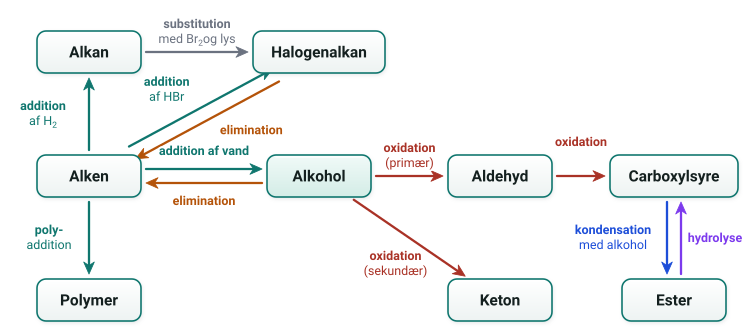

Sådan kan stofklasserne omdannes til hinanden. Farven på pilen viser reaktionstypen. Kortet er figuren fra Kemibogen B4.7.

Spillet har også kondensationen af en carboxylsyre og en amin til et amid fra afsnit B4.6. Den står ikke på kortet.
Syntesemester
Tre lag med hver sin top 10. Begynd i lag 1, eller gå direkte til det lag, du vil øve.
Lag 1: Grupperne
Slå de molekyler, der hører til gruppen på skiltet, før de forsvinder ned i hullet igen. Tasterne 1 til 9 virker også.
Et forkert slag koster et liv. Efter tre forkerte er spillet slut. Det er det også, når tiden er gået.
Rigtige slag i træk giver ×2, ×3 og op til ×5. Et nyt niveau giver 10 sekunder mere.
Niveau 1 til 9 er øvelse. Rekorden og top 10 er kun på niveau 10, hvor alle grupperne og testene er med.
Lag 2: Reaktionerne
Svar på spørgsmålet: produktet, det der står over pilen, reaktionstypen eller udgangsstoffet.
1 minut er rekorden: så mange rigtige som muligt på 60 sekunder. Et forkert svar trækker ét fra.
Øv uden tid har tre liv og nye reaktioner for hvert femte spørgsmål, men ingen rekord.
Lag 3: Syntesen
Skriv ruten fra udgangsstoffet til målet. Hvert reagenskort reagerer med det sidste stof i ruten.
Pointene kommer af den korteste vej: hvert trin ud over den, hvert kort uden reaktion, hvert fortrudt trin og hvert hint koster. Den korteste vej uden fejl giver 50 % ekstra.
Seks synteser pr. runde. Tiden giver kun en lille bonus, så det er planen, der vinder.
Genveje
Enter start og næste · 1-9 slå i lag 1 og svar i lag 2 · Backspace fortryd i lag 3 · P pause · S syntesekortet · R reglerne · M lyd · Esc luk